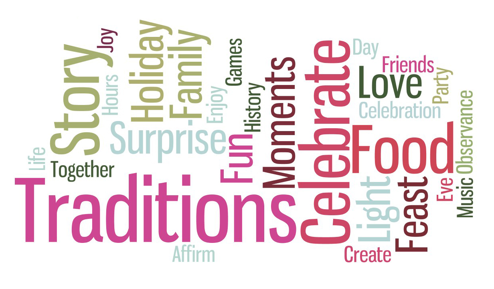
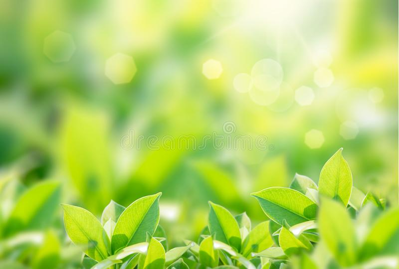

Traditions
- And also in modern world the traditions are not followed it is followed only by some people
- every one are taking it as a task not as a blessing one
Traditions are seen very less now a days.
Traditions represent a critical piece of our culture and our lives .Tradition is a belief, principle, custom or behaviour with symbolic meaning or special significance that people in a particular group or society have continued to follow for a long time, often being handed down from one generation to the next. It’s derived from the Latin verb “trader” meaning to transmit, hand over, give for safekeeping. It’s frequently assumed that traditions have ancient history, but many have been invented on purpose over short spans of time.
Traditions provide us with numerous benefits. They provide us with a source of identity; they tell the story of where we came from and remind us of what has shaped our lives. They connect generations and strengthen our group bonds, and help us feel that we are part of something unique and special. They offer us both comfort and security especially in times of profound change and grief. They teach us values and help us pass on our cultural or religious history. Best of all, they create lasting memories which in itself provides us with a wide variety of benefits.
Many asxpects comes under traditions such as festivals,fasting,dress code ,etc.
Every one in their busy life not following all these they are taking it as a casual,but onece if you start to follow the traditions all will go smooth.
Every thing will be eqaull treated and is possible for everyone to do all the rituals

Another most imortant thing is about Greenary
->In cities there is less greenary which is opposite to the villages
->And also it is more useful for us to get fresh air and also it gives healthy feeling
->But do to more pollution it is decreasing day y day
->In palce of these artificial greenary is increasing more
->Where people are not caring about the plants
->Less people are growing the plants where they show care and love towards the plants and spreading the positiveness arounfd the world
->Plants are living organisms that depend upon several environmental factors for their survival. These include: appropriate amount of light and temperature, sources of nutrition, water, air, and physical space and preferred medium to grow.
->Direct effect is when toxins harm plants by depositing on them directly from the air and affecting their leaf metabolism and uptake of carbon, which they need to build their body and get energy to live.
->Particulate matter are very fine particles that get stirred in the air from different sources (industries, agriculture). Due to their small size, they can harm living organisms if the exposure is long term or severe.
->It is sad to know that plants suffer harm when exposed to dust because they are often planted in cities to filter the particulate matter pollution from the air.
->Plants that are affected by this pollution could lose the most affected leaves or fade due to the inability to photosynthesize. Leaves can also sustain chemical injuries, lesions, if the deposited dust reacts with water from the environment.